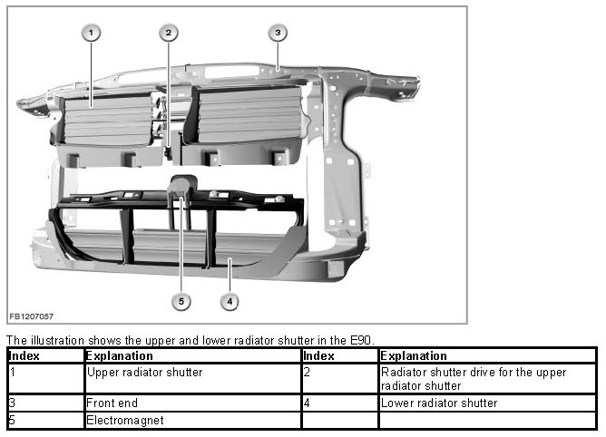
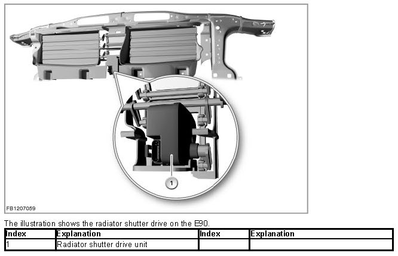
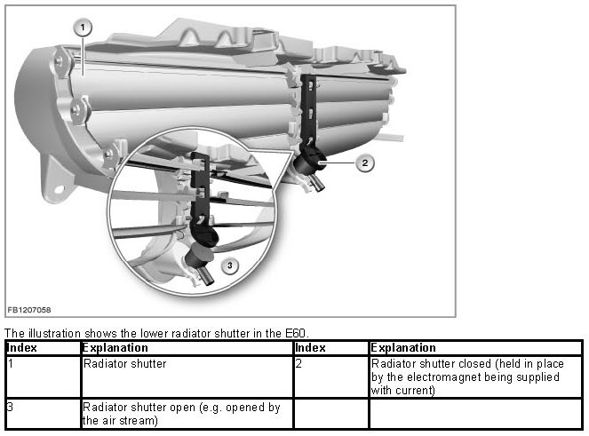
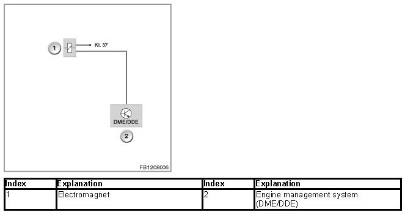
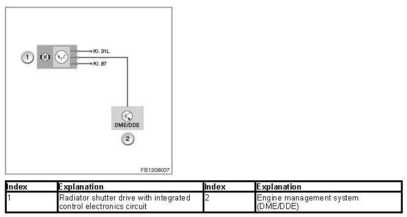
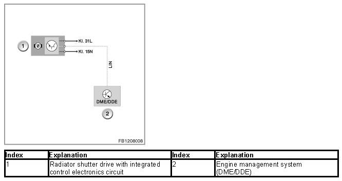
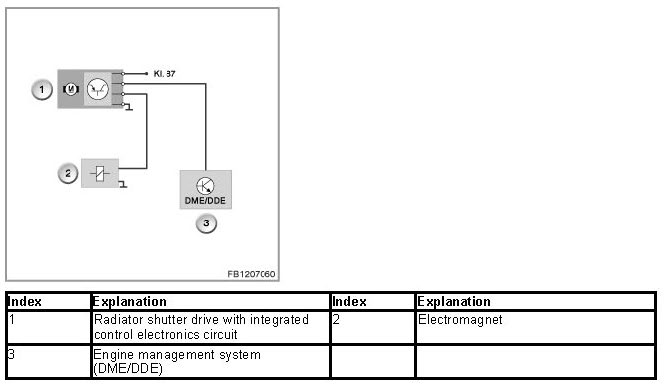
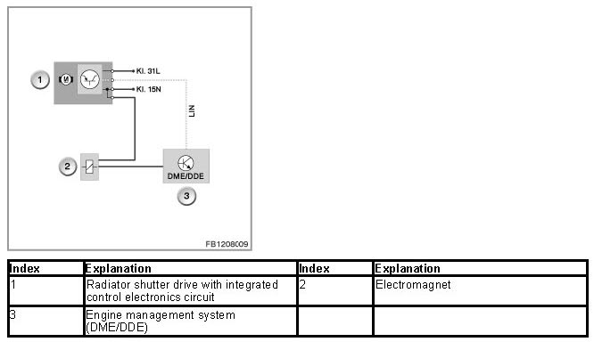

Air Flap Control
Air flap control
The air flap control regulates the air supply for the engine and assemblies cooling system by only opening the radiator shutter as it is needed.
Up to 2 radiator shutters can be installed in the front end.
Conditional on the present design envelope, the engine version and the engine management system, there are the following versions of the air flap control:
- Passive air flap control via electromagnet
- Active air flap control via actuator motor (radiator shutter drive)
- Active and passive air flap control (radiator shutter drive for the upper radiator shutter and electromagnet for the lower radiator shutter)
The required design envelope for the active air flap control means that it cannot be combined on some models with certain optional extras (e.g. Sports package, active steering or active cruise control). The passive air flap control for the lower radiator shutter must be eliminated in some models with turbocharging.

The engine management system (DME or DDE) continuously calculates the required cooling output and only opens the radiator shutter when an increased amount of cooling air is actually required (DME stands for "Digital Motor Electronics"; DDE stands for "Digital Diesel Electronics").
While the vehicle is being driven, the closed radiator shutter shortens the warm-up phase of the engine, as operating temperature is reached more quickly if the environment is better encapsulated.
The air flow through the radiator creates high aerodynamic drag as the driving speed increases. In higher road speed ranges, the closed radiator shutter improves the aerodynamics. This reduces fuel consumption and thus the emission value.
Brief description of components
The following components are described for the air flap control:
Radiator shutter drive unit
The radiator shutter drive with integrated control electronics circuit is an actuator motor. The radiator shutter drive is connected to an adjustment mechanism. The adjustment mechanism moves the individual fins of the radiator shutter to the relevant position.
The radiator shutter has 2 positions:
- Radiator shutter closed
- Radiator shutter opened

Electromagnet for radiator shutter
The electromagnet has the task of holding the radiator shutter closed.

System functions
The following system functions are described for the air flap control:
- Passive air flap control via electromagnet
- Active air flap control via actuator motor (radiator shutter drive)
- Passive and active air flap control
Passive air flap control via electromagnet
If only the passive air flap control is installed, the electromagnet is switched on and off directly via the engine management system (DME/DDE).
The electromagnet is supplied with voltage via terminal 87.

When voltage is applied to the electromagnet, the radiator shutter is closed and held in this position.
When power is disconnected from the electromagnet, the radiator shutter opens while the vehicle is being driven due to the air stream. When the vehicle is at a standstill or is moving slowly, the radiator shutter is opened by the air flow of the intake radiator fan or electric fan.
Active air flap control via actuator motor (radiator shutter drive)
Depending on the model series and model year, the active air flap control is activated either via the LIN bus or a power output from the engine management system.
- Active air flap control via power output from the engine management system
The radiator shutter drive is activated via a pulse-width modulated signal (PWM signal) from the engine management system.
The radiator shutter drive is supplied with voltage via terminal 87.

- Active air flap control via LIN bus
The radiator shutter drive is activated via the LIN bus by the engine management system. The radiator shutter drive is supplied with voltage via terminal 15N.

Passive and active air flap control
Depending on the model series and model year, the passive and active air flap control is activated either via the LIN bus or a power output from the engine management system.
- Active and passive air flap control via power output from the engine management system
The radiator shutter drive is activated via a pulse-width modulated signal (PWM signal) from the engine management system (DME or DDE). The radiator shutter drive is supplied with voltage via terminal 87.
At the request of the engine management system, the electromagnet is switched on by a switch signal from the control electronics circuit. The control electronics circuit is integrated in the radiator shutter drive.

- Active and passive air flap control via LIN bus
The radiator shutter drive is activated via the LIN bus by the engine management system (DME or DDE). The radiator shutter drive and electromagnet are supplied with voltage via terminal 15N.
The electromagnet is activated directly by the engine management system.

Notes for Service department
If an electrical fault occurs in the air flap control, only the lock of the lower radiator shutter is cancelled (passive air flap control via electromagnet). The radiator shutter drive for the upper radiator shutter (active air flap control via actuator motor) remains in the position it was in when the fault occurred.
The radiator shutter lock is also deactivated if a defect is detected at the coolant-temperature sensor or electric fan.
WARNING: Only perform work on the air flap and the air flap control with the engine switched off.
Work may only be carried out on the air flap control system (in particular checking the air flaps for stiff movement) with the engine switched off. There is a risk of injury.
Switch-on conditions
The active and passive air flap control is active as of terminal 15 ON.
The following evaluation criteria are used for the air flap control:
- Coolant temperature (coolant-temperature sensor and temperature sensor at the radiator outlet)
- Gearbox oil temperature
- Engine oil temperature
- Application of current to the map thermostat
- Engine load signal
- Engine speed
- Road speed
- Speed of the electric fan
- Trailer detection
Special case: frost protection
The following evaluation criteria are used for frost protection:
- Road speed
- Outside temperature
- Status signal of window wipers
Control operation is governed by fixed control variables in order to detect weather conditions in which slush is formed on the roads.
Otherwise, this slush would collect before the closed fins of the radiator shutter and might freeze. The frost protection opens the fins at an early stage, thus preventing the snow from collecting.
No liability can be accepted for printing or other errors. Subject to changes of a technical nature